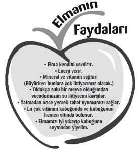

Kara Oklar Çetesi©
Editör / Gülderen Çopur, Sanem Su Anıl
Redaksiyon / Reyhan Tutumlu
Çizimler / Sait Munzur
Mizanpaj / E. Bahar Mete
Kapak Tasarımı /
Düş Mühendisleri Tasarım Atölyesi
Yayın Ekibi / Ahmet Şahin, Demet Uyar,
Gül Balcı, Seyra F. Erdaloğlu, Timuçin Karakuş
“Kitabın Mutfağı” adlı projemiz kapsamında bu kitabın mutfağına giren yayın danışmanı
öğretmen ve öğrencilerimize destekleri için çok teşekkür ediyoruz.
Naz Etüd: Uzman Psikolog Gülnur Tanyeri Kesgin , Öğretmen Ümit Belen.
Öğrenciler: Doruk Belen, Göktuğ Keskin, Şebnem Uslu, Mert Karaoğlu,
Ayşesu Atlıhan, Eray Okçu, Anıl Türkan, Rojin Kanat, Doğa Tuzcu, İpek Karadut.
www.karaoklarcetesi.com
1. Basım Nisan 2012

Her türlü kitap talebinizi temsilciliklerimizden, www.elmayayinevi.com adresimizden,
telefon veya faks aracılığıyla yayınevimizden yapabilirsiniz. Kitaplarımızla ilgili
görüşlerinizi www.elmayayinevi.com adresindeki web sitemizde belirtebilirsiniz.
ELMA YAYINEVİ©
Kitabın tüm yayın hakları ELMA YAYINEVİ ©’ne aittir. Yazılı izin alınmadan kısmen veya tamamen
alıntı yapılamaz, kopya edilemez, çoğaltılamaz ve yayımlanamaz. Türkiye’de basılmıştır.
“ELMA”, AKADEMİ ARTI YAY. AŞ’nin bir markasıdır. Copyright © 2012, ELMA Publishing House